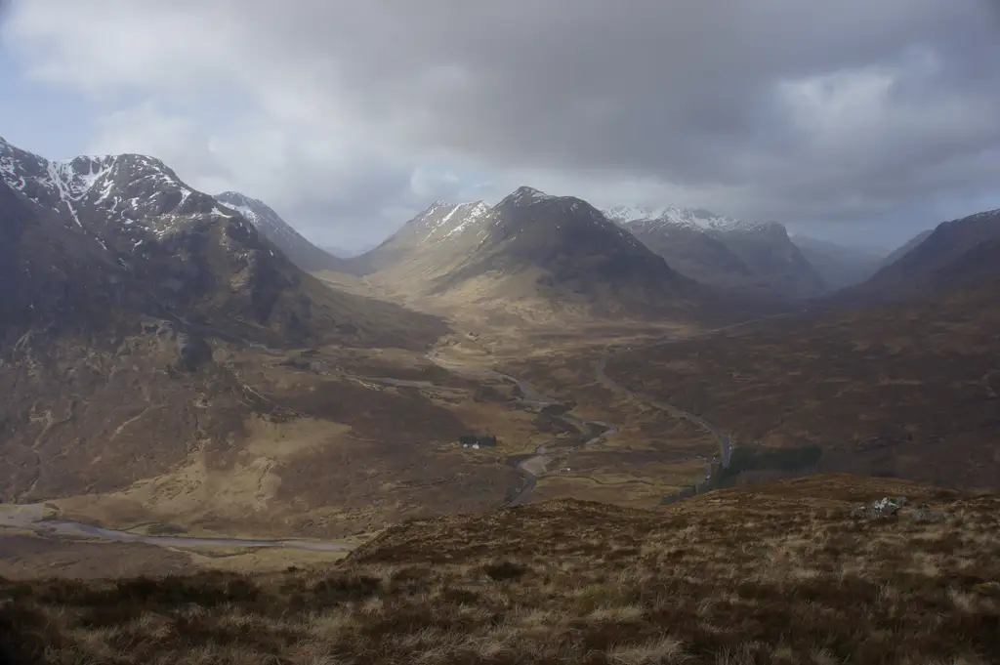
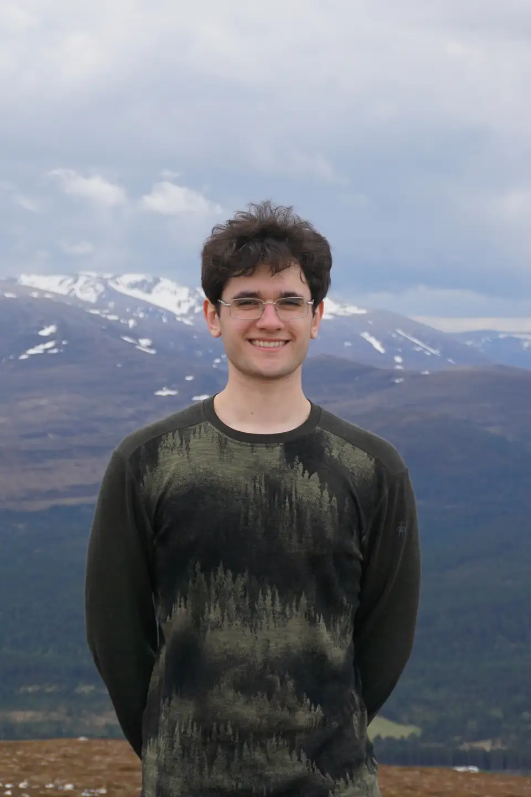
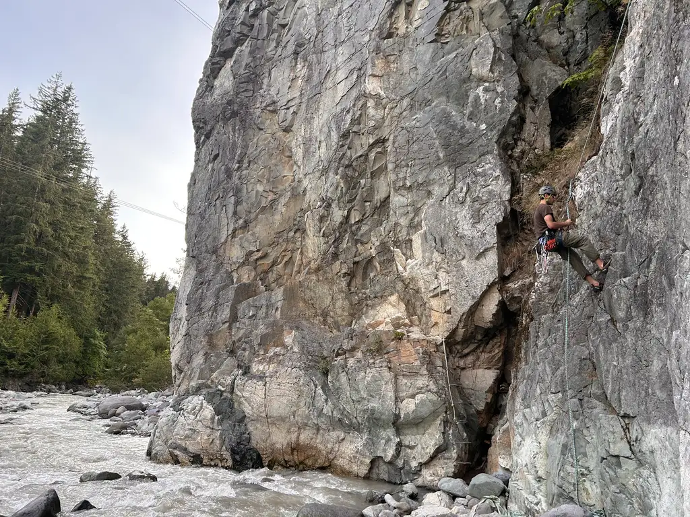
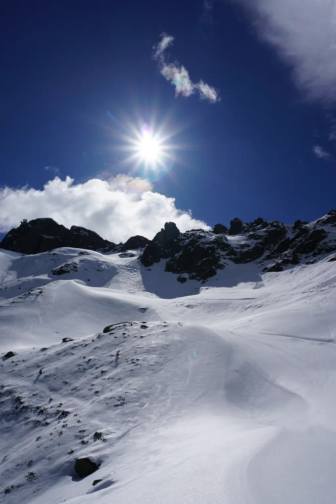

About
I like understanding how systems work so I can figure out how they break, and then make them harder to break.
Most of my time goes into security, Linux and low-level projects. I'm president of UCSC, UAlberta's undergrad cyber security club. When I'm away from the keyboard, I'm usually rock climbing, mountaineering or working on cars.

Projects
- sub-risc-emu Lightweight RISC CPU emulator for running and stepping through simple assembly programs while watching registers and memory. C
- doc-cam Real-time video pipeline that detects hands and faces, labels fingers and keeps persistent identities across sessions. Python
- kestrel Stripped-down doc-cam for the Raspberry Pi 4 that boxes people in view and overlays live GY-271 magnetometer data. Python
- fishbot Bot that watches Binance price feeds over WebSocket and trades Polymarket crypto markets whose outcome is already decided. Python
- NvimTex40000 Neovim plugin that auto-compiles .tex files on save and previews them in zathura under i3wm. Lua
Resume

Email is the best way to reach me.
nikola.blaz@Edmonton, Alberta ·